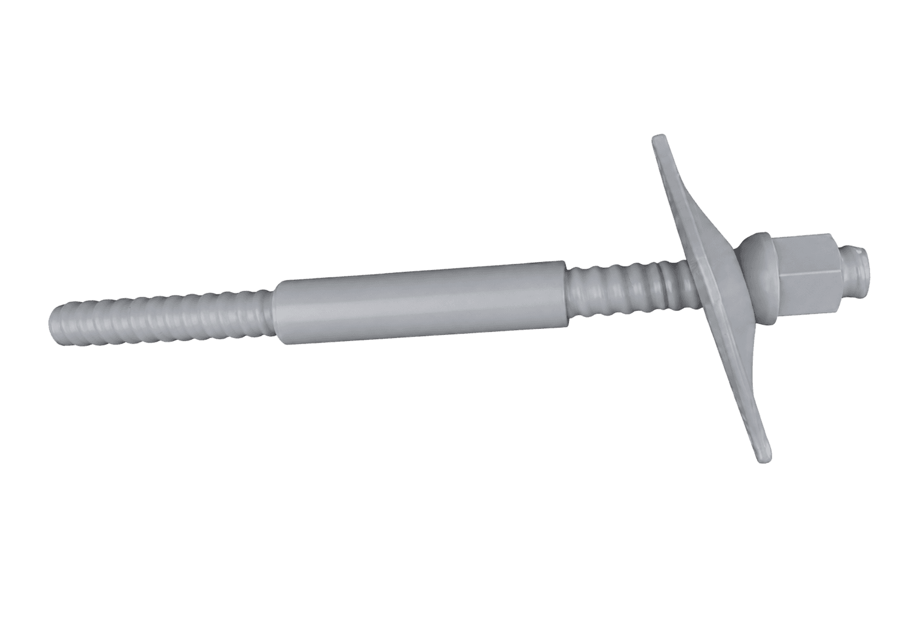

Torque 5500 Nm · jaw 800 mm · 2500 kg
HTP Roller 400
Ett redskap för hantering av borrade pålar och borrstänger, och för att gänga pålskarvar. Gripfunktion och rörrotation i samma enhet, manövrerat från grävmaskinen eller med fjärrkontroll.
Läs merProdukter
Självborrande stag, bergbultssystem, skarvhylsor och borrverktyg — utvalda för bärförmåga, installationseffektivitet och beprövad beständighet. Varje produktsida innehåller fullständiga tekniska data.
Torque 5500 Nm · jaw 800 mm · 2500 kg
Ett redskap för hantering av borrade pålar och borrstänger, och för att gänga pålskarvar. Gripfunktion och rörrotation i samma enhet, manövrerat från grävmaskinen eller med fjärrkontroll.
Läs merR25 · R32 · R38 · R51
R Thread självborrande stagsystem utför borrning, injektering och förankring i ett moment. Enkelt att hantera och utan risk för att borrhålet rasar. Lämpligt för instabila förhållanden.
Läs merT30 · T40 · T52 · T73 · T76 · T103 · T111 · T127 · T130 · T150 · T200
T Thread självborrande bergbultar, med ett brett dimensionsområde och högre bärförmåga. Används i komplicerade, lösa och uppspruckna markförhållanden samt i trånga utrymmen.
Läs merSXR25 · SXR32 · SXR38 · SXR51
Ihåliga stag i rostfritt stål med skarvhylsor, sexkantsmuttrar och brickor — SXR-serien, för markförhållanden där korrosionsbeständighet är avgörande.
Läs merISO 1461 coating
Varmförzinkad bergbult är en självborrande bergbult med gott korrosionsskydd. Skyddsskiktet bildas genom att produkter med ren yta doppas i smält zink.
Läs mer
Hot-dip galvanizing + epoxy coating
Duplexbelagd bergbult är en förstärkningsmetod med bättre korrosionsskydd, där varmförzinkning kombineras med epoxibeläggning. Ytan blir hårdare och beläggningen flagnar inte.